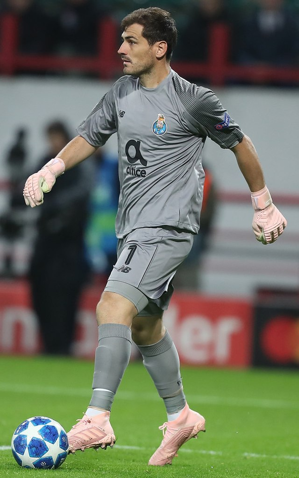

ALFREDO DI STÉFANO
La Saeta Rubia. Líder del Real Madrid de los años 50, ganó 5 Copas de Europa seguidas y cambió la historia del fútbol.
CRISTIANO RONALDO
Máximo goleador histórico del club. 450 goles en 438 partidos y 4 Champions. Potencia, disciplina y gloria.
RAÚL GONZÁLEZ
Eterno capitán. Alma del madridismo. Más de 700 partidos, entrega, goles y corazón blanco.
ZINEDINE ZIDANE
Elegancia total. Autor de la volea más bella de la Champions 2002. Luego ganó 3 Champions como técnico.

SERGIO RAMOS
Capitán valiente y héroe del minuto 93’. Defensa goleador, símbolo de garra y honor madridista.
FERENC PUSKÁS
El cañón húngaro. Llegó con 31 años y marcó 242 goles en 262 partidos. Leyenda con zurda de oro.

IKER CASILLAS
“San Iker”. Portero de reflejos milagrosos, capitán en la Décima y leyenda viva de la portería blanca.

LUKA MODRIĆ
Cerebro del Madrid moderno. Balón de Oro 2018 y dueño del mediocampo con su clase y visión.
ROBERTO CARLOS
Lateral brasileño de potencia y precisión. Sus disparos de falta son pura leyenda del Bernabéu.
KARIM BENZEMA
Delantero elegante e inteligente. Balón de Oro 2022, símbolo del Madrid post-Cristiano.